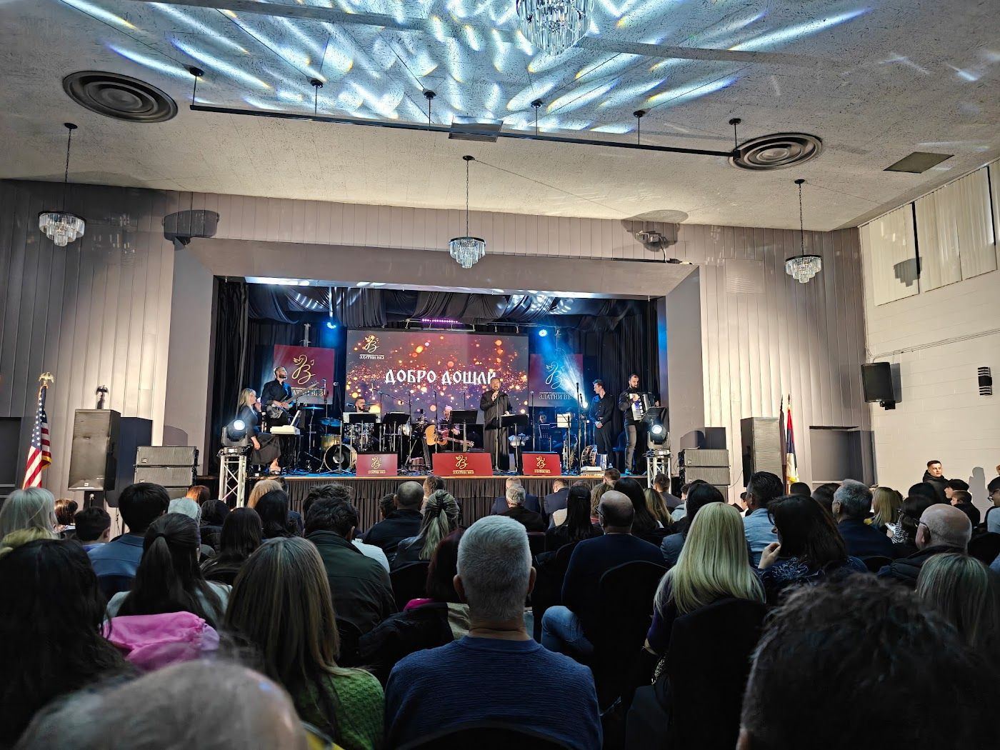

Šta vas očekuje
Veče starih pesama

Tradicionalno dvoglasno pevanje, epske pesme, svatovske pesme i obredne melodije, u narodnim nošnjama i uz živu pratnju. Između pesama pričamo odakle koja pesma potiče i šta znači.
Deo svake karte ide u humanitarni projekat koncerta, koji objavljujemo na blogu.
Gde mogu da kupim karte?
Onlajn preko TicketsCandy. Kliknite na bilo koje dugme „Kupite karte“ na ovom sajtu.
Kada počinje koncert?
Koncert počinje u 17:00 u nedelju, 20. decembra, i završava se oko 19:00.
Mogu li deca da dođu?
Da. Naši koncerti su za celu porodicu.
Možemo li da pozovemo Zlatni Vez na naš događaj?
Da. Pišite nam preko stranice Kontakt i navedite datum, mesto i vrstu događaja.